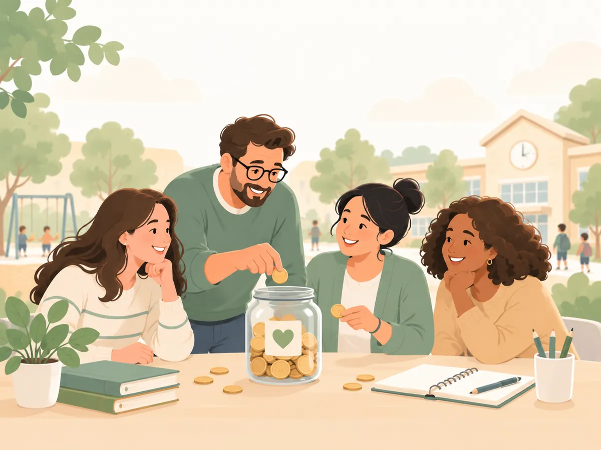

Збори
Створюйте разові або щомісячні збори та фіксуйте внески батьків. Видно, хто вже здав і скільки ще залишилось.
Comfundy допомагає батьківському комітету: оголошення, збори і внески класу — в одному місці. Безкоштовно.
Все необхідне батьківському комітету

Створюйте разові або щомісячні збори та фіксуйте внески батьків. Видно, хто вже здав і скільки ще залишилось.
Важлива інформація для класу в одному місці — не загубиться серед повідомлень у чаті.
Запитайте батьків, скільки кожен готовий внести на нову ідею, перш ніж оголошувати збір.
Ведіть список батьків і бачте, скільки вже зібрано та хто ще не вніс.
Як це працює
Наприклад, «5-А клас».
За потреби вкажіть email — кожен отримає свій кабінет.
Публікуйте оголошення, створюйте збори, позначайте внески та проводьте опитування.
Для батьків
Кожен з батьків бачить оголошення, збори класу і скільки залишилось внести, власну історію внесків та опитування.
Почати просто
Оголошення, збори і внески — в одному місці. Безкоштовно.
Створити спільноту